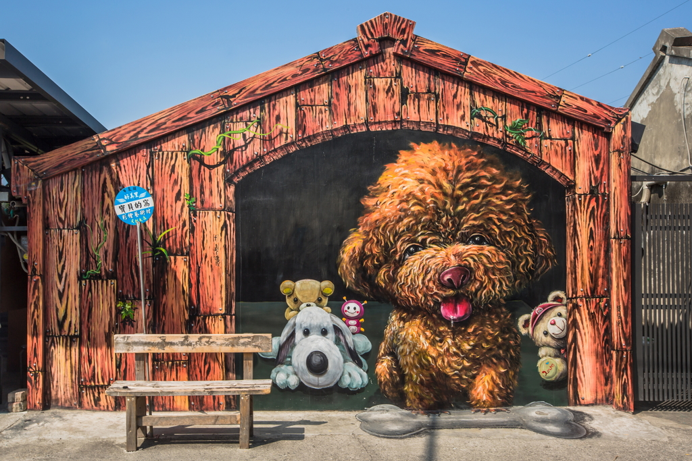
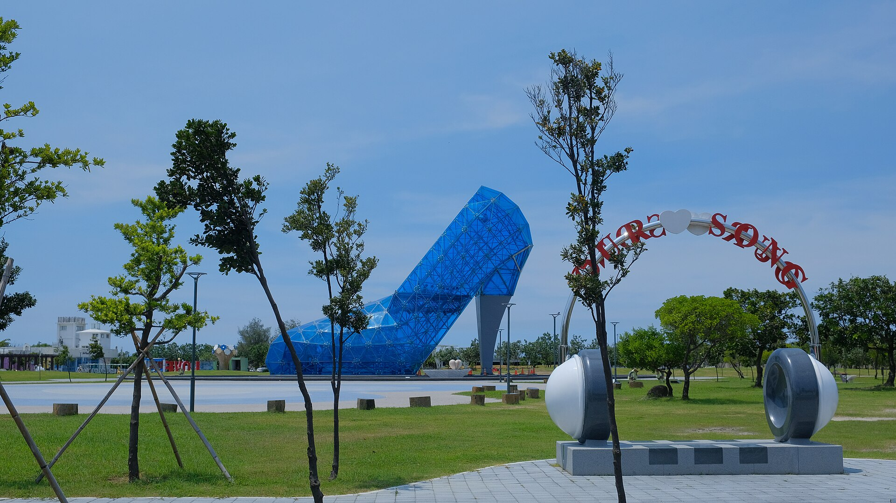
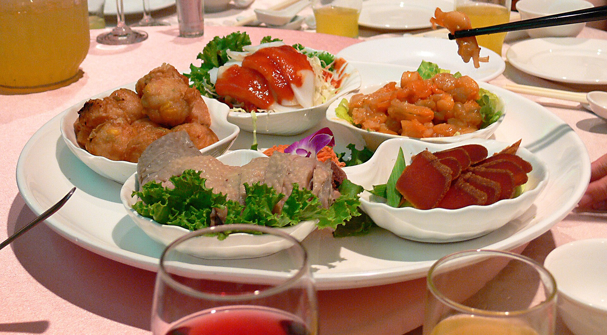
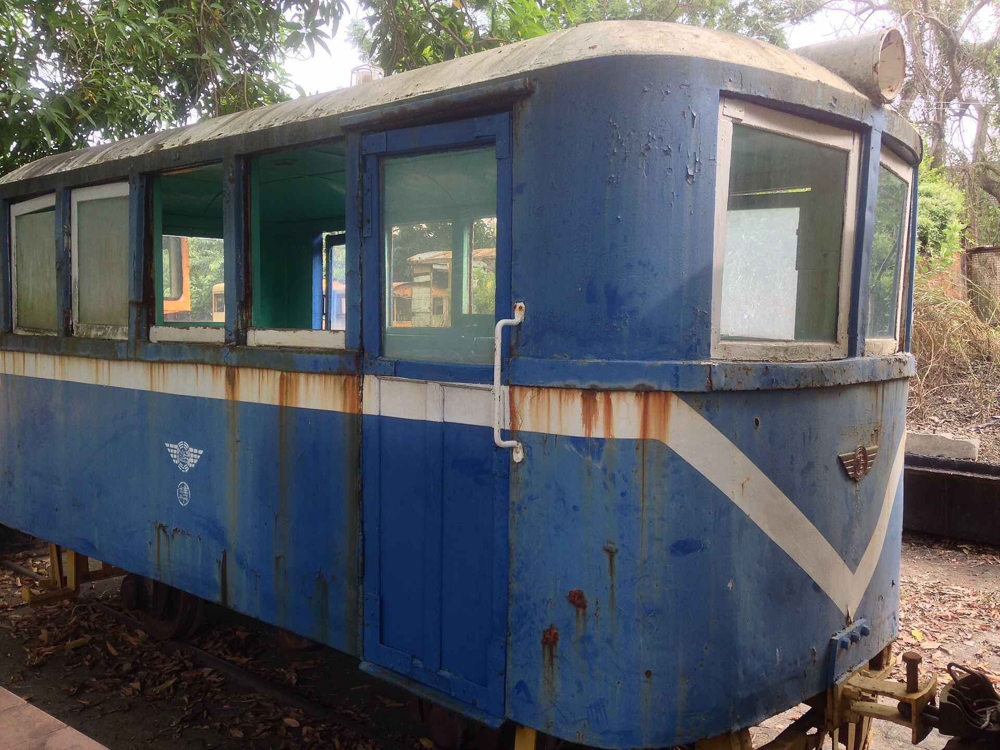

民生北路集合出發
34 人確認到齊後搭遊覽車前往海線。
Day at a glance
停留時間已依團體版固定；移動空檔也保留下車、集合與清點人數的緩衝。
34 人確認到齊後搭遊覽車前往海線。
跟著海洋主題壁畫散步、拍立體互動照。
停留 30 分鐘，快速拍下藍色玻璃地標。
團體海鮮桌菜，吃飽再往萌寵樂園出發。
和羊咩咩、羊駝、小兔子近距離互動。
復古五分車收尾，18:00 回到原下車處。
Schedule
每站都有導航；團體上下車時請跟著領隊清點，不自行換車或離隊。
建議 08:50 前到上車處，放好行李並完成 34 人清點；09:00 準時發車。
沿著漁村小徑尋找海洋生物與立體壁畫；團體可分小隊拍照，10:50 回到集合點，保留上車時間。
下一站車程與上下車緩衝：約 20 分鐘

以巨型藍色玻璃高跟鞋為主角拍團體照；停留只有 30 分鐘，建議先合照、再自由取景。
11:50 集合上車，約 10 分鐘到餐廳

地址：嘉義縣布袋鎮永安里 359 號。享用團體海鮮桌菜；34 人建議事前確認桌數、兒童椅、素食與過敏需求，13:20 前完成洗手間與上車準備。
下一站車程與上下車緩衝：約 40 分鐘

看羊咩咩、羊駝、小兔子等萌寵，也能體驗動物主題遊戲；請依現場人員指示餵食，不拿自己的食物餵動物。
15:30 開始集合，下一站車程約 10 分鐘

逛百年糖廠、看復古車站，再搭五分車賞田園。現行假日故宮南院線建議搭 16:20 蒜頭站發車、16:40 回程，來回約 45 分鐘。
34 人請主辦先向園區確認當日班次、團體安排與餘位

17:20 清點後發車，預計 18:00 抵達嘉義市民生北路 256 號；實際時間依當日交通狀況。
Before we go
沿海戶外活動多，輕裝、防曬與準時集合最重要。
帶遮陽帽、太陽眼鏡、防曬乳與水；早晚怕冷可加一件薄外套。
彩繪村與糖廠都要步行，建議運動鞋；萌寵區依現場規定保持距離。
34 人的素食、過敏、兒童椅與桌數請提前回報主辦，避免現場臨時調整。
由領隊統一清點；五分車有固定發車時間，最後一站更不能延誤。